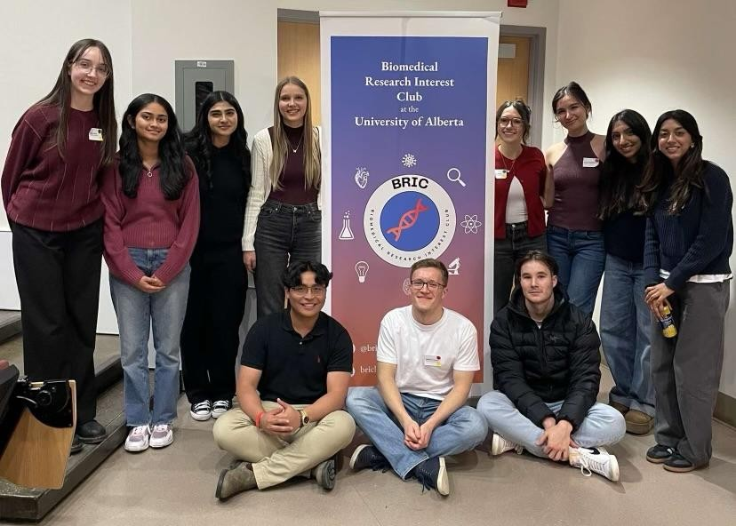
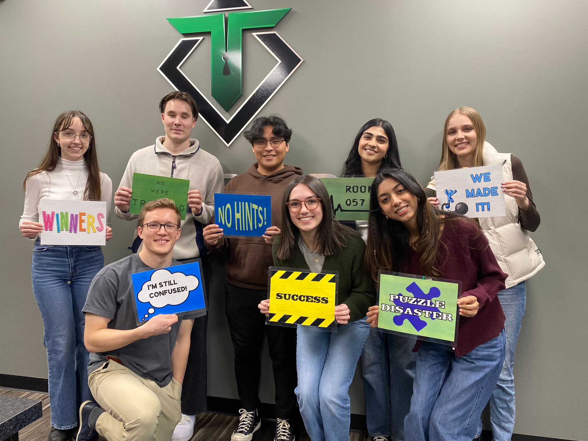

About Us
1 / 3
1 / 3

BRIC Executive Team
2 / 3

BRIC Executive Team
3 / 3
Kowen's Research Presentation at MILA - Quebec AI Institute
3 / 3
Xavier's Research Presentation at 2024 CES National Conference
3 / 3
Kaeli's Poster Presentation at the 57th Annual Summer Students’ Research Day
3 / 3
Kainat's Poster Presentation at the 57th Annual Summer Students’ Research Day
3 / 3

Sarah's Research Presentation at the 57th Annual Summer Students’ Research Day
3 / 3

Brandon's Research Presentation at the 57th Annual Summer Students’ Research Day

Xavier Penetrante
Hi everyone! My name is Xavier and I’m 1 of BRIC’s co-founders alongside Sarah and will be serving as 1 of the Co-Presidents.
I’m currently in my 3rd year of the BSc Honors Neuroscience program and am in Dr. Deena Hamza’s lab where we are working on
synthesizing a transdisciplinary framework that addresses the ecology of change. Some things I like to do in my spare time
include listening to music and going to concerts, keeping up with pro sports, going hiking in Jasper or Kananaskis, hanging
out with my dog Percy, and reading. A fun fact about me is that I was born in the Philippines and didn’t move to Canada until I was 3!
xpenetra@ualberta.ca

Sarah Strick
Hi guys! I’m Sarah and I’m ½ of the president duo this year. We’re very excited to get things rolling and we have a fantastic executive team for our inaugural year. I’m currently going into my third year in the Honours Immunology and Infection program. I’m also currently in the Brain Power Lab (under my supervisor, Dr. Power), where I’ve spent this past summer looking at proinflammatory cell death in a glioma cell line. When I’m not studying or in the lab, I love spending time with friends and reading (trying to read classics right now). As for a fun fact, I grew up on a farm in southern Alberta & love home visiting as often as I can!
strick@ualberta.ca

Linden Stuart
Hi everyone, my name is Linden and I’m one of the VP Events for BRIC this year! I’m going into my third year of Physiology and spent the summer doing research in the Wine lab. Specifically, I studied host-microbial interactions in pediatric inflammatory bowel diseases with a focus on potential pathobionts that may contribute to disease pathogenesis. When I’m not inundated with school, I enjoy spending time on my family farm. One fun fact about me is that I own a small cattle herd! I also love to read and have never been on an airplane. I’m so excited to be a part of the BRIC team and help bring our events to life!
lpstuart@ualberta.ca

Ania Sasanpour
My name is Ania Sasanpour and I’m one of the VP Events this year. I’m in my third year of undergrad studying cell biology and I will be researching the relationship between flies' intestinal cells and their gut microbes in Dr. Foley’s lab. My hobbies outside of academics include painting and playing the violin. A fun fact about me is that I can speak three languages!
asasanpo@ualberta.ca

Matthew Cesarz
Hi, my name is Matthew and I am VP volunteering for BRIC. As I head into my 3rd year of the Physiology program, I hope to finally do research next summer, and some of the opportunities that entice me involve, for instance, all kinds of rehabilitation, sensory/motor, and biophysics research. I am very open to a plethora of options but I would like to research something unique and relevant to the real world.
Now some fun facts… both of my parents immigrated from Poland in their teenage years so I can speak Polish and have had six wonderful opportunities to visit my family in Poland thus far. On an ordinary day, I enjoy staying active either at a gym or outdoors.
mcesarz@ualberta.ca

Kainat Meherali
Hi everyone! My name is Kainat and I’m currently going into my third year of Honours Pharmacology. I’m very excited to be part of BRIC this year as VP external! I’m currently doing my PMCOL 301 project in the Kerr lab! We’re examining mouse behaviour after being on a course of paclitaxel (a type of chemotherapeutic drug) and also working on in vitro studies where we can directly treat DRG neurons with paclitaxel and then assess things like survival, outgrowth/degeneration. Outside of university I love hanging out with my friends and finding new cafes to go to!
kmeheralk@ualberta.ca

Parinika Pal
Hi I’m Parinika! I’m doing a Specialization in Pharmacology and I’m thrilled to expand BRIC’s outreach as a VP external!
I am interested in Dr. Plane’s research which examines vascular dysfunction in healthy and disease conditions such as diabetes, and utilizes an array of electrophysiological techniques to create strategies that restore endothelial function.
Some fun facts about me are that I like to paint, Walter White is my role model, and my favourite amino acid is isoleucine.
parinika@ualberta.ca

Alex Want
Hi, I’m Alex and I am going into my third year of the neuroscience program at the U of A and will be this year's VP Finance for BRIC! In the upcoming winter semester I will be joining the Jackson lab which studies neural circuits specifically in an area of the brain called the claustrum. In addition to studying at the U of A I have a position at the Steadward Center which involves adapted physical activity and helping individuals experiencing disabilities through various programs provided at the center. In my down time I enjoy staying physically active through activities such as working out, kayaking, skiing, and mountain biking!
awant@ualberta.ca

Brandon Kowal
Hi everyone, I’m Brandon Kowal and I’m one of the VP Finance for BRIC, and I’m currently in my 3rd Year of Honors Neuroscience. I’m currently doing research on infantile chest compressions during CPR at the Center for the Studies of Asphyxia and Resuscitation (CSAR). Some facts about me are that I completed a marathon and coach U15AAA hockey.
bjkowal@ualberta.ca

Kowen Woo
Hi, I'm Kowen Woo, one of the VPs of Fundraising and also the Web Developer for BRIC. I'm a 3rd-year Computer Science student with a passion for AI and its applications.
My research experience spans three institutions: the University of Alberta's Games, Research, AI, and Learning (GRAIL) lab; McGill University's Multimodal Imaging and Connectome Analysis (MICA) lab; and the Montreal Institute for Learning Algorithms (MILA), where I developed an AI project to improve long-term care for Indigenous communities.
Outside of academics, I'm an avid sports enthusiast, I enjoy playing music, and I like to design clothes. I'm excited to bring my diverse experiences and skills to my role at BRIC.
kowen1@ualberta.ca

Vanshi Patel
Hi, I’m Vanshi and I’m one of the VPs of Fundraising. I’m going into my third year of Biological Sciences. Currently, I’m in a dental lab where I’m looking into the prevalence of TMJ disorders in patients treated previously with premolar extractions. When I’m not studying, I like to watch movies and read. A fun fact about me is that I started swimming when I was 6!
vanshi@ualberta.ca

Claire Borle
Hi, I’m Claire and I will be VP Internal for BRIC’s inaugural year! I’m in my 3rd year of Honors Neuroscience and I am working in Dr. Jacqueline Cummine’s lab investigating the functional connectivity of brain regions during a statistical learning task completed in an fMRI scanner. Statistical learning is the way humans are able to pick up on conditional probability patterns without even knowing any patterns exist, and may be a key tool that helps infants learn language! Outside of academics, I’m a Ukrainian dancer with Viter, and this past summer I went on my first international dance tour to Poland and the Baltic states.
caborle@ualberta.ca

Kaeli Woodcliffe
Hi! My name is Kaeli and I'm one of BRIC's VP Communications. I'm in my third year of the BSc Molecular, Cellular, and developmental Biology program where I can take tons of GENET courses (my favourite). I currently work in Dr.El-Bialy's lab where I study mandibular condyle volumes in response to clear aligner treatments. A fun fact about me is that I'm a ringette goaltender for the Edmonton WAM and I coach many teams in the greater Edmonton area so if I'm not studying or working on my research project odds are you can find me at a rink somewhere!
woodliff@ualberta.ca

Krishna Trivedi
Hi my name is Krishna and I am one of the VP Communication execs! I am in my third year of biological sciences. Currently, I’m in an oncology lab where I am assessing the hematological toxicity of esophageal cancer patients. When I am not studying, I like to play my harmonium and watch a lot of horror movies! A fun fact about me is that my dream destination for a vacation is Singapore.
kntrived@ualberta.ca

Ella Lu
Hello everyone! My name is Ella and I am BRIC's 2nd year Junior Director. I am currently in my second year of Honors Neuroscience and haven't chipped down to a specific research topic I want to go into yet. My interest does tend to lean towards neurodegeneration, however I am still open to many other areas. Outside of academia I enjoy art! This includes everything art related, from painting to dancing. Fun fact: I do tap dancing.
ellajiay@ualberta.ca

Ayanna Virani
My name is Ayanna and I am one of the junior directors for BRIC. I am in my first year of Neuroscience and I spent the summer doing research in the geriatrics department on urinary incontinence discussions on social media. I am currently a research assistant for a study about the usability and effectiveness of benzodiazepine patient information resources for older adults. I love to play the piano, and stay active during my free time. A fun fact about me is that I played ringette for 10 years.
ayvirani@ualberta.ca